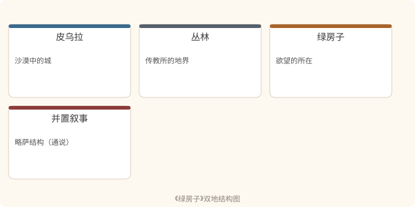

绿房子
一、基本信息
| 作者 | 略萨 |
|---|---|
| 成书/出版 | 1966年（作者页 B159 口径：绿房子（1966）） Mario Vargas Llosa — Encyclopaedia Britannica（百科全书） |
| 国别/地区 | 秘鲁 |
| 时代 | 现当代 · 20世纪 |
| 体裁 | 长篇小说 |
| 语言 | 西班牙语 |

《绿房子》双地结构图（主题·结构图）
二、创作背景
作者页（B159）：略萨 major_works 载'绿房子（1966）、世界末日之战（1981）'（B159 作者页定位，详见 chengshiyugou 条核对）。
题材（通说待核）：秘鲁皮乌拉与亚马逊丛林的双地叙事——绿房子妓院与修道院。
三、内容脉络
安塞尔莫建'绿房子'——与圣塔玛丽亚德聂瓦修女院的对抗（通说待核）。
多线时空并置——略萨式结构（通说待核）。
四、主要人物表
| 人物 | 身份 | 说明 |
|---|---|---|
| 安塞尔莫 | 建妓院者 | （通说待核） |
| 胡安娜等 | 女性群像 | （通说待核） |
五、主题与艺术特点
- 妓院与修道院的对峙（通说）。
- 叙事结构的革命（通说待核——对话式并置）。
- 秘鲁边缘社会（通说）。
六、影响与评论
- 作者页：略萨成名作之一（B159 作者页口径）。
Mario Vargas Llosa — Encyclopaedia Britannica（百科全书） - 首届罗慕洛·加列戈斯奖（1967年——通说待核）。
Mario Vargas Llosa — Encyclopaedia Britannica（百科全书）
七、阅读建议
难点
- 对话式并置叙事（略萨招牌）。
- 秘鲁地名。
- 《绿房子》（人民文学出版社，通说待核）。
- 西班牙文原版。
先《城市与狗》后本作。
八、待核实
- 1966年出版（Editorial Seix Barral说）核对。
- 安塞尔莫人名与绿房子选址待核。
- 罗慕洛·加列戈斯奖（1967）核对。
本页主要来源
略萨的其他收录作品：城市与狗